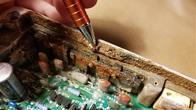

-
I purchased a 1986 300zx a while back after getting rid of my 85. It didnât run but would crank over when I got it and the previous owner told me they thought it was the fuel pump so I replaced it along with the filter and fuel pressure regulator. This didnât fix my problem so I put a new distributor in with new plugs and wires which fixed my 85 when it quit running, but It still didnât want to fire so I replaced the tps still with no effect. I unplugged the MAF which got it to spit and sputter but die as soon as you give it any throttle. Then recently the fuel pump has stopped priming when you turn the key on like itâs not getting power but the relay is still clicking like itâs working. I have a decent amount of experience with cars but this thing has me puzzled appreciate any input on anything I might be looking over thanks. -
Check the injector wires. You can see if it's injectors by using starter spray to see if it will run fine outside of that. I just had this gremlin. after changing ALL sensors on the engine to find out it was just a shorted injector wire knocking out the whole bank.
Before I figured this out, though, I noticed a previous owner removed the plastic protector from the ECU and water got inside and ruined it, so you can also check if the injector transistors in the ecu are okay.1984 GLL 300ZX NA to VG30ET Engine Swap Big Turbo
1987 Auto Rare Kouki Slicktop Velvet-Cake (NA2T in progress: parts sourced) -
Had the same issue with my old 76 S30. Everything was perfect but it wouldnât start. Eventually, we realized the fuel filter was upside down. Flip it around and it started right up. Sounds stupid but you never know.

Copyright © 2006–. All rights reserved. Privacy Policy